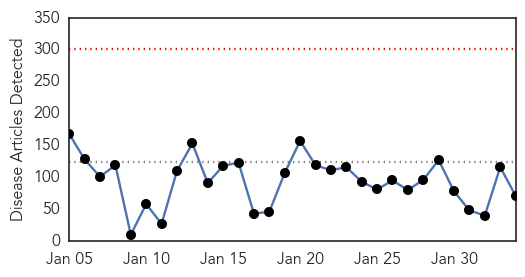

Ebola
30-Day Web Trend
0 alerts, 0 warnings

30-Day Twitter Trend
2 alerts, 0 warnings

Article Locations
Article Confidences

Top Articles:
- 1.000
- MSF Warns Critical Gaps Remain in Ebola Fight
- 1.000
- WHO declares end of Ebola outbreak in Sierra Leone, but neighbor Guinea struggles to end virus
- 1.000
- Ebola has mutated and could be more contagious, experts warn
- 1.000
- First Major Vaccine Trials In Liberia
- 0.999
- Liberia begins clinical trial for Ebola shots as outbreak ebbs
- 0.998
- The Government of Canada announces return of a mobile laboratory from Kailahun, Sierra Leone
- 0.998
- WHO names Ebola response chief
- 0.998
- The Government of Canada announces return of a mobile laboratory from Kailahun, Sierra Leone -- WINNIPEG, Feb. 3, 2015
- 0.998
- Two military medics back in UK for Ebola monitoring
- 0.998
- UK monitoring Two Health Workers for Possible Ebola Exposure
- 0.998
- Only 40% of Ebola Donations Have Reached Affected Countries
- 0.998
- WHO names Ebola response chief
- 0.998
- WHO names Ebola response chief
- 0.998
- Ebola: Sierra Leone officials criticize travel relaxation
- 0.997
- Ebola: showing up the fearmongers
- 0.997
- Ebola Mission Ends? Liberia Shuts Treatment Units, Vaccine Off
- 0.996
- Ebola: UN health agency says large-scale vaccine trials under way in Liberia
- 0.996
- Ebola vaccine trials begin in Liberia
- 0.995
- The Government of Canada announces return of a mobile laboratory from Kailahun Sierra Leone - News Press Release
- 0.994
- Liberia: Ebola: UN health agency says large-scale vaccine trials under way in Liberia
- 0.992
- American doctor and Ebola survivor back "home" in Liberia, fights stigma - Liberia
- 0.991
- Ebola vaccine: safe, but yet to prove potent
- 0.990
- Ebola Vaccines Trial Begins in Liberia
- 0.989
- Another U.K. Military Worker Suspected of Ebola
- 0.989
- Guinea's Grand Imam Pulls No Punches In His Ebola Message
- 0.989
- Russia sends humanitarian aid to Ebola-hit Guinea
- 0.986
- Study: Delays in Ebola funds could have helped virus spread
- 0.984
- Ebola drug trials begin; Liberians divided
- 0.983
- Chinese CDC Experts Conduct Ebola Trainings In Sierra Leone
- 0.982
- Liberian Officials Pleased With Initial Ebola Vaccine Trials
- 0.982
- Sierra Leone officials criticize travel relaxation amidst Ebola decline
- 0.981
- 'Too early' to ease Ebola measures
- 0.980
- AIDS Remains Key Global Health Threat
- 0.980
- Ebola vaccine trial starts in Liberia
- 0.977
- Ebola vaccines testing starts in Liberia
- 0.977
- Only Two-Thirds Of Ebola Donations Reached Affected Countries: Crisis Funding Is Too Slow, Says Study
- 0.975
- Thomas Jefferson University Institute Pasteur the OIV-USA and Thermo Fisher Scientific Establish Collaborative Training Program to Prevent Spread of Ebola Virus in Ivory Coast - News Press Release
- 0.971
- Funding delays may have helped Ebola spread – study
- 0.968
- Crisis control
- 0.964
- Proper use of PPEs in fighting Ebola critical says Health Expert
- 0.963
- Ebola vaccine trials begin in Liberia
- 0.959
- AU Announces Solidarity Conference to Mobilize Support for Post-Ebola Reconstruction in Liberia and other Most Affected Ebola Countries
- 0.953
- Testing of Ebola vaccines starts in Liberia
- 0.950
- Ebola Vaccine Large-Scale Trial Begins In Liberia : LIFE : Tech Times
- 0.947
- WHO Names Bruce Aylward Special Representative For Ebola Response
- 0.946
- Only 40 percent of Ebola donations have been received by affected countries
- 0.939
- Ebola: Sierra Leone officials criticize travel relaxation
- 0.926
- 2 vaccines for Ebola start trials in Liberia
- 0.924
- Too Much Public Health
- 0.921
- UN Mission for Ebola Emergency Response (UNMEER) External Situation Report, 3 February 2015 - Sierra Leone
Showing top 50 articles...
Top Tweets:
- 0.696
- What worked in controlling the Ebola outbreak in West Africa http://t.co/HUK7Li1olw
- 0.611
- Clinical trial testing brincidofovir as an Ebola drug halted because of falling case counts says. Vaccine trials next?
- 0.580
- Thinking of Liberia as they start the first large-scale trials of an experimental Ebola vaccine this week. endebolanow wecanfightthis
Swine Flu
30-Day Web Trend
10 alerts, 5 warnings

30-Day Twitter Trend
0 alerts, 0 warnings

Article Locations

Article Confidences
Top Articles:
- 1.000
- Swine flu: 4 more cases reported in Malwa region
- 0.999
- Swine flu in India: Newborn girl dies, while mother lives: Gwalior
- 0.999
- Swine flu in India: Doctor tested positive, total count 5 in Odisha
- 0.999
- the edge of knowledge
- 0.999
- Gurgaon schools to teach students about swine flu prevention lessons
- 0.999
- H1N1: after ex-CM, Home Minister tests positive
- 0.999
- Bhopal: Health officials unwilling to provide details on H1N1
- 0.999
- 191 swine flu deaths reported in India in January 2015
- 0.999
- 61 new cases of swine flu reported in Delhi
- 0.999
- 61 new cases of swine flu reported in Delhi
- 0.998
- Madurai on swine flu alert
- 0.998
- Vaccine available in Madhya Pradesh, but not many aware
- 0.998
- One more dies of swine flu in Rajasthan; docs' leave cancelled
- 0.997
- 2 women detected with swine flu; city's first cases of 2015
- 0.997
- Swine flu death toll 62, Tuesday records highest positive cases
- 0.997
- H1N1 scare: Two more die of suspected swine flu in Indore
- 0.997
- 3 more succumb to swine flu in Gujarat; toll rises to 45
- 0.993
- Doctor tests positive of Swine flu
- 0.990
- One more swine flu case detected in Odisha
- 0.988
- Health Secretary assures all assistance to states to tackle swine flu
- 0.987
- Woman, new born die of swine flu in India's Madhya Pradesh
- 0.987
- Swine flu: Congress demands Raje's resignation
- 0.986
- Swine flu claims another life in Kutch
- 0.984
- N Chandrababu Naidu directs officials to fast-track swine flu tests
- 0.980
- Woman from Palghar dies of H1N1 in Mumbai
- 0.977
- Health Secretary assures all assistance to states to tackle swine flu , AniNews.in
- 0.972
- Congress demands Raje's resignation
- 0.970
- Araku MP discharged from hospital
- 0.963
- Haryana makes a week's leave mandatory for flu-hit students
- 0.958
- Haryana makes a week's leave mandatory for flu-hit students
- 0.958
- Swine flu cases decreasing
- 0.943
- Andhra: Araku MP Down with Swine Flu
- 0.943
- A week's leave mandatory for all flu-hit students
- 0.916
- Government orders 10 lakh Tamiflu tablets for swine flu
- 0.907
- Goa records first swine flu death
- 0.882
- Confidence in Government Linked to Willingness to Vaccinate
- 0.759
- Congress to target Gujarat government on swine flu, graft during Assembly
- 0.722
- Congress to raise swine flu, graft issues, in Gujarat Assembly
- 0.669
- New GRH Dean inspects fever wards
- 0.527
- Health Secretary reviews preparedness of states affected by H1N1 assures all
- 0.523
- Health Secretary reviews preparedness of states affected by H1N1
Top Tweets:
-
No tweets found for Feb 03, 2015